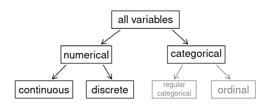
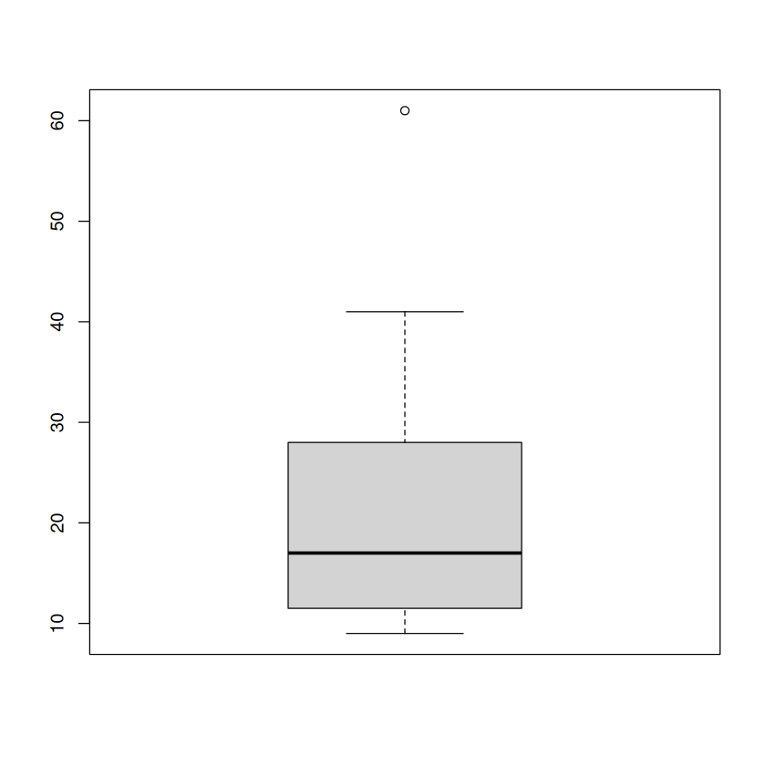
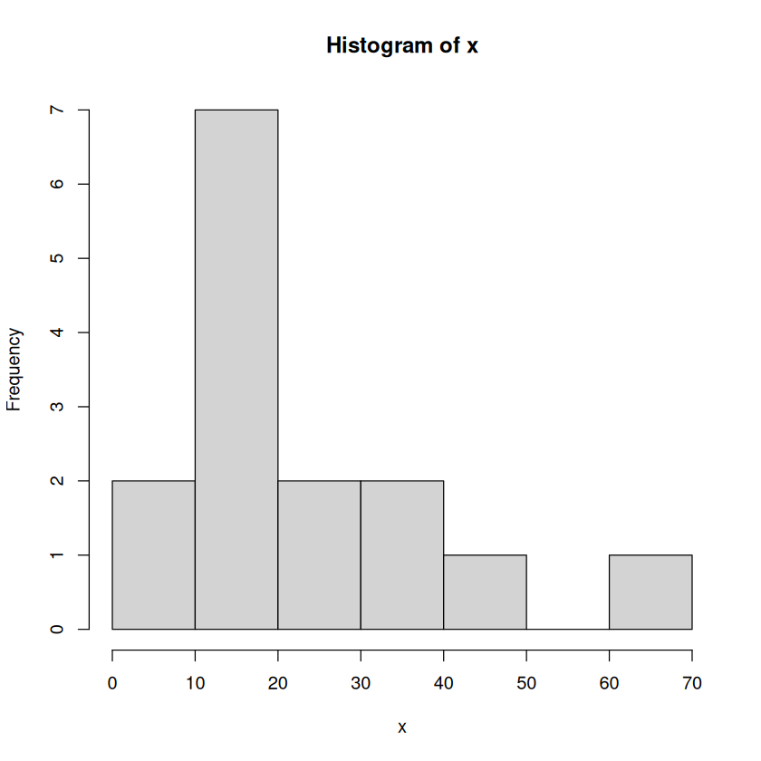

mean_fun <- function(x){
sum(x)/length(x)
}
median_fun <- function(x){
# sample size
N <- length(x)
# if N is even
if (N %% 2 == 0){
# [] subsetting (the index of an element)
# x[2] is the second value of x
(x[N / 2] + x[(N + 1) / 2]) / 2
# if N is odd
} else {
x[(N + 1) / 2]
}
}
mode_fun <- function(x){
u <- unique(x)
tab <- tabulate(match(x, u))
u[tab == max(tab)]
}
mad_fun <- function(x) {
n <- length(x)
ab_dev <- abs(x - mean(x))
(1/n) * sum(ab_dev)
}Tema 0. Estadística descriptiva
En la jerga de DS por variable vamos a entender la medición de una característica o atributo. Ejemplos de variables son: edad, peso, longitud, latitud, precio, ingreso, etc.
Clasificaciones de variables
Las variables pueden ser clasificadas por su representación numérica, o por cómo son medidas (es decir, cómo son asignados números a los atributos de acuerdo a una regla, su escala de medición). Las variables también pueden ser clasificadas de acuerdo a cómo están asociadas unas con otras.
Esta es una clasificación de acuerdo a su representación numérica. Las variables discretas son contables infintas (pueden sear asignados números naturales \(\mathbb{N}=\{1, 2, 3, \dots\}\)). Las variables continuas son incontables infinitas (pueden ser asignadas a los números reales \(\mathbb{R}\)).

Tipos de variables (tomada de OpenInstro Statistics)
Las variables categóricas podrían considerarse un tipo de variable discreta, pero no es del todo cierto. Las variables categóricas no tienen porqué seguir un orden en particular ni ser asignadas a un subconjunto de números. Por ejemplo, la variable sexo puede ser tan bien representada por (0, 1) como por (1, 2). La variable ordinal Nivel educativo puede ser tan bien representada con (0, 1, 2, 3) como por (1,2, 3, 4) etc.
De acuerdo a su nivel de medición, pueden ser clasificadas como nominales, ordinales, de intervalo y de razón.
Las variables con escala nominal no tienen una correspondencia numérica específica. Se les asignan números solo para identificarlas. Las operaciones aritméticas de suma, resta, multiplicación, división, etc, no tienen sentido, porque el número que se les asigna no implica más o menos cantidad de su atributo. La única operación permitida es la de conteo, su estadística descriptiva se hace con frecuencias y porcentajes.
Las variables en escala ordinal tampoco tienen una correspondencia, siempre y cuando sean asignados valores que preserven el orden de rango. No pueden describir grados de diferencia ni magnitud relativa entre dos observaciones con diferente orden. Por ejemplo, Alberto califica de bueno un libro que Luis calificó con de malo en una escala de \(\{\text{pésimo, malo, regular, bueno, excelente}\}\). No podemos decir que el libro fue doblemente bueno para Alberto que para Luis. También se pueden describir con frecuencias y porcentajes, pero además con mediana y rango.
Las las variables en escala de intervalo sí tienen una correspondencia precisa que debe preservar orden y magnitud. Se puede sumar y restar con valores en esta escala, pero no dividir ni multiplicar. El 0 es arbitrario (como en los grados Celcius) por lo que un 0 no implica ausencia del atributo, y no se puede decir que 20 °C es el doble de caliente que 10 °C. Todo intervalo en una escala de intervalo es igual que otro intervalo en la escala: \(15-10=30 - 25\). Sus estadísticos descriptivos son media, desviación estándar, varianza (y por extensión mediana y rango).
Las variables en escala de razón tienen todas las propiedades de las intervalares (conservan orden y magnitud), además de un 0 verdadero, en el que el 0 sí significa una ausencia de magnitud. Se puede sumar, restar, dividir y multiplicar en estas escalas. Pueden expresar magnitudes relativas (e.g., 4 metros es el doble de 2 metros). Sus estadísticos descriptivos, además de media, desviación estándar, varianza, mediana y rango, son la media geométrica, coeficiente de variación.
Estadísticos descriptivos56
La estadística se divide clásicamente en dos grandes ramas: la descriptiva y la inferencial (a su vez en estimación y prueba de hipótesis).
De locación
Encontrar valores típicos o centrales que describan bien los datos.
- Media: \(\bar Y = \sum_{i=1}^N Y_i/N\)
- Mediana: \(\tilde{Y} = Y_{[N+1]/2}\) si \(N\) es impar; \(\tilde{Y} = (Y_{[N]/2} + Y_{[N/2 + 1]})/2\) si \(N\) es par.
- Moda: el valor
De dispersión
- Rango intercuartílico, IQR: \(Q_3 - Q_1\).
- Varianza: \(s^2=\frac{1}{n-1}\sum_{i=1}^n (y_i - \bar y)^2\)
- Desviación estándar: \(s = \sqrt{s}\),
- Desviación media absoluta: \(\text{MAD} = \frac{1}{n-1}\sum_{i=1}^n \mid y_i - \bar y\mid\)
- Rango: \(\max(y) - \min(y)\)
Ejercicio:
\(x=(9, 10, 11, 11, 12, 14, 16, 17, 19, 21, 25, 31, 32, 41, 61)\)
Obtener: media, mediana, Q1, Q3, IQR, MAD y desviación estándar.
x <- c(9, 10, 11, 11, 12, 14, 16, 17, 19, 21, 25, 31, 32, 41, 61)
median_fun(x)
mean_fun(x)
quantile(x, prob = c(0.25, 0.75))
IQR(x) # o
diff(quantile(x, probs = c(0.25, 0.75)))
# mad
mad_fun(x)
sd(x)
17
22
- 25%
- 11.5
- 75%
- 28
16.5
75%: 16.5
10.6666666666667
14.2978519865248
boxplot(x)
hist(x)